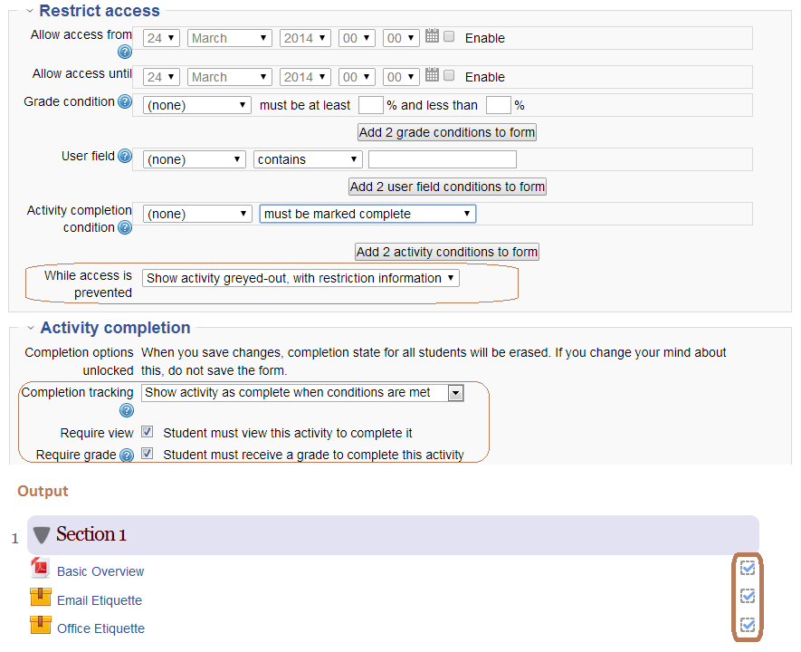
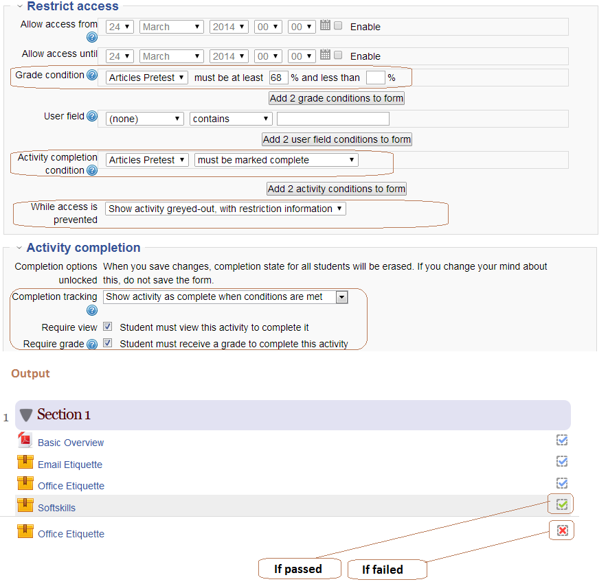
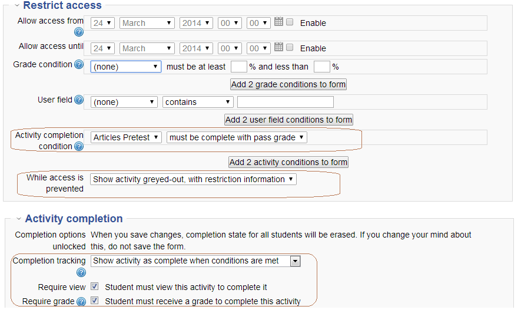
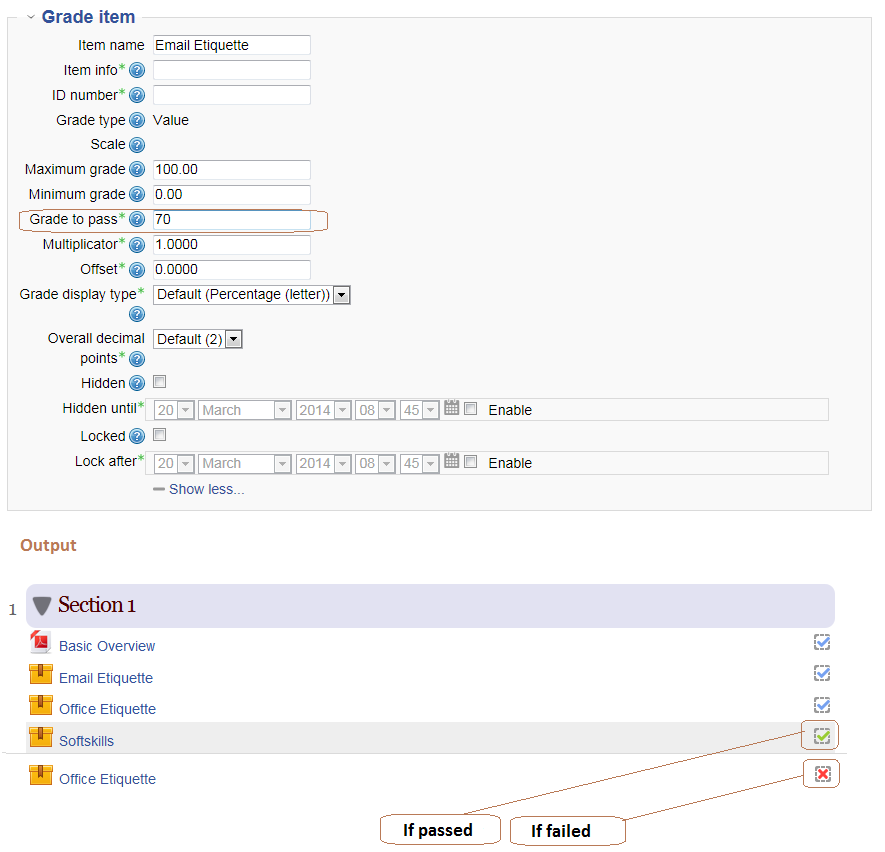
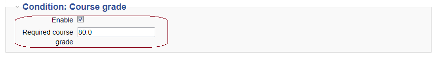

Important Settings
1. Enable completion tracking and conditional access in Site administration > Advanced Features.
2. Navigate to Home > Site administration > Courses > Course default settings and select completion tracking to "Yes".
or
Do it individually for each course, Navigate to course > course-administration > edit and select completion tracking to "Yes".
3. Modules come up with three scenarios:
(A)
When you do not wish to give any grade condition:
Create a module and enable activity completion for sure to know that this module is done with a blue tick mark,ex:

(B)
When you wish to give a grade condition:
There are again with two ways:
(1) Create a module, specify a grade condition inside a module like,ex:

(2) Create a module, choose the activity completion condition inside a module like,ex:

and Navigate to course > course administration > Grades > click on the tab 'Categories and Items' click on edit of
item and configure your grade in the column 'Grade to pass',ex:

Finally you get a green tickmark when passed and red cross tickmark when failed in both 1 and 2 cases.
(C)
When you do not configure anything:
When you do neither of the above A and B, the block will not work and you get no tickmark
4. Coure completion:
Navigate to Course > Course administration > Course completion > specify a grade to let us know he or she is passed or failed

Note : You can have other criteria settings in course completion